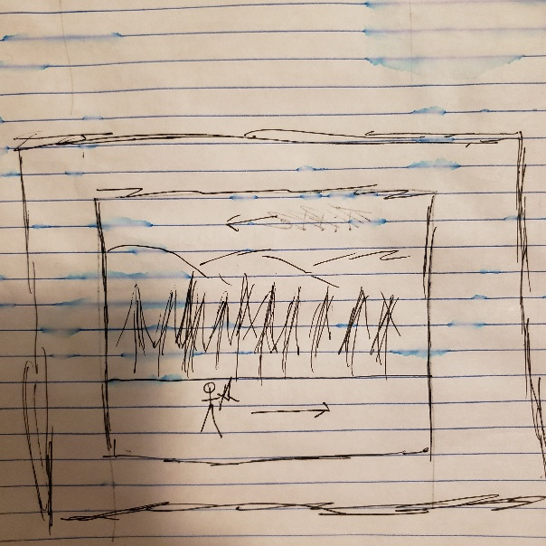
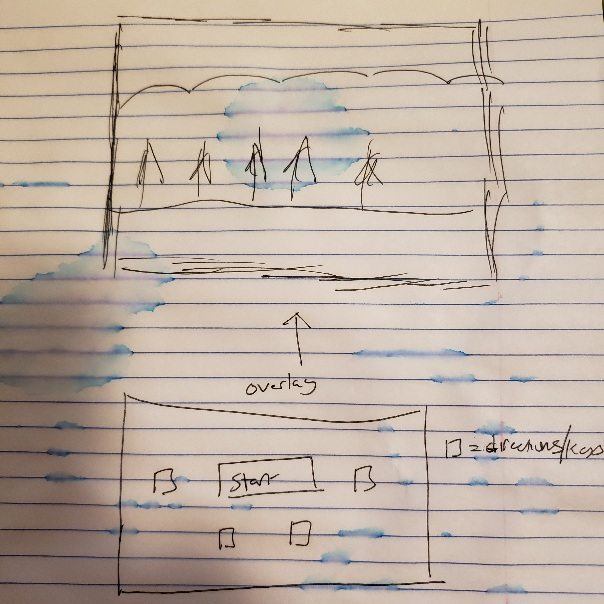

Winter's Dawn
High Concept
The player avoids and kills enemies to attempt to get as far as possible.
Genre
Platformer, endless runner, sorta 2d combat
Platform
Desktop Only
Story
The narrative is simple, the player's objective is to survive, and get as far as possible while doing so. The narrative on why the knight is running, and fighting is up for the imagination
Aesthetics
Graphics style: Pixilated more similar to a diablo look but 2d, it will also have a winter feel with snow particles
Sound: Fairly realistic sounds for medival combat
Types of sound: background ambience, music, and in game responsive sound
Gameplay
Mechanics
The player has the ability to move through a robust state machine, they can roll, block, move, stand still, or attack Each move give the player the ability to fight and avoid enemies. Elements such as the shield and attack will have charges, so their use will be limited. Forcing the player to change their strategy as the game goes on. The enemies will run at the player and attempt to hit the player.
Mockups
 Process
My main process was an aim for the look and feel of the game. Animations and sounds had to match, and everything had to look good. This also meant that the other elements, such as the background and the music, also had to add to the the aestetic of the game. I tried very hard to make sure nothing felt out of place. Many of the in-game mechanics and rules were defined through testing, seeing what worked, and what felt good and normal. I messed with transitions to states, timing to allow the animations to play, and ways to get from one state to another, all with the goal of creating interesting gameplay that was fun and not too difficult for the the user. In terms of other resources used, I used a few of Prof. Chin's tutorial videos, as well as circle blast, and documentation for howler and pixi.
Sources
All of the assets that I gathered were available for full use, most I got from Itch.io, some I got from free sound libraries and other free/open license sources.
Requirments
My project meets the requirments laid out in the rubric. It uses an ES6 class, has validation for css and html. No known user actions break the game. The images are optimized and small, and many are scaled up via code. Documentation is done. The console has no errors and or console.log calls.